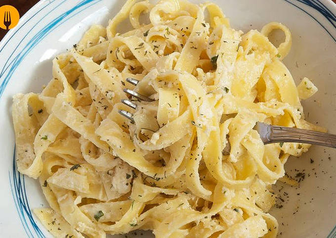
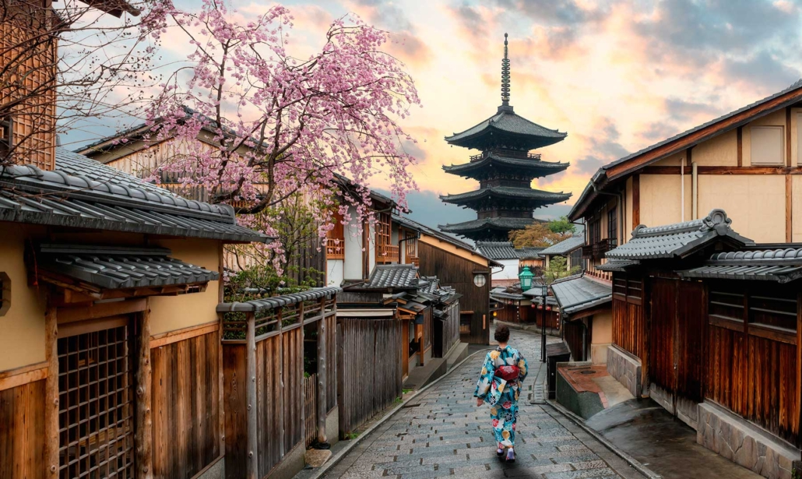

EJERCICIO 5
Lista de tareas
| Tarea | Estado | Notas Adicionales |
|---|---|---|
 Tarea 1 Tarea 1 |
Pendiente |
|
| Tarea 2 | Completada |
|
| Tarea 3 |
Pendiente |
|
Ejercicio 6
Receta de Pasta Alfredo
| Ingrediente | Cantidad |
|---|---|
| Pasta | 250g |
| Mantequilla | 50g |
| Nata (crema de leche) | 200ml |
| Queso parmesano rallado | 100g |
| Sal y pimienta al gusto | - |
Instrucciones:
- Cocina la pasta en agua hirviendo con sal hasta que esté al dente.
- En una sartén grande, derrite la mantequilla a fuego medio.
- Agrega la nata (crema de leche) y deja que hierva suavemente durante unos minutos.
- Añade el queso parmesano rallado y revuelve hasta que se derrita y la salsa espese.
- Sazona con sal y pimienta al gusto.
- Mezcla la salsa con la pasta cocida y sirve caliente.
Ejercicio 7
Álbum de Fotos de mi Viaje
 |
||
|  |  |
 |
Descripciones detalladas:
- Ubicación: París, Francia. Fecha: 12 de agosto de 2023. Descripción: Torre Eiffel al atardecer.
- Ubicación: Roma, Italia. Fecha: 20 de agosto de 2023. Descripción: Coliseo Romano bajo el sol de la mañana.
- Ubicación: Machu Picchu, Perú. Fecha: 5 de septiembre de 2023. Descripción: Ruinas incas en la montaña.
- Ubicación: Kioto, Japón. Fecha: 28 de septiembre de 2023. Descripción: Templo dorado rodeado de naturaleza.
- Ubicación: Sydney, Australia. Fecha: 10 de octubre de 2023. Descripción: Ópera de Sydney iluminada por la noche.
- Ubicación: Nueva York, Estados Unidos. Fecha: 25 de octubre de 2023. Descripción: Skyline de Manhattan desde el río Hudson.